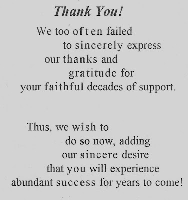

Finale
6/20/2009
In 2005 Adelia and I mailed the final printed issue of Newsy Vents. There was no mention of it being the final issue within its pages other than the vertical hidden message contained in the "Thank you" printed on the back cover. In case you received that issue but missed the notice (or were not an NAAV member), here's a reprint for the record:
